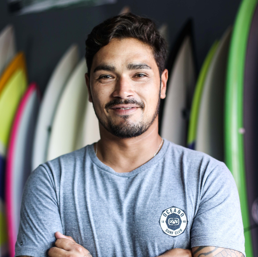

COVID SAFE: Tu seguridad y la de nuestros empleados es importante. Por eso seguimos las recomendaciones de las autoridades sanitarias y hemos reforzado nuestros controles de seguridad e higiene.

"Buenas combinaciones, buena atención y lindo ambiente. Todo se veía y sabía fresco. Lugar muy recomendable."
Armando Paredes
Periodista

"La comida es exquisita, los platos bien equilibrados. El servicio es bueno, amable. El ambiente es amplio, cómodo y agradable."
Susana Horia
Diseñadora de modas

"Muy buen ambiente. La comida está elaborada con muy buen gusto, los platos son abundantes. Calidad y calidez en la atención."
Elvis Cochuelo
Actor
Algo de historia
Bear Resto fue fundado por Jassa Bezkien y Ao Gao, una pareja llegada desde Japon en 1970 comprometida en compartir la riqueza gastronómica oriental y realzar sus sabores.
En aquel entonces comenzó como un pequeño restaurante familiar, pero gracias a la dedicación, esfuerzo y empeño, hoy cuenta con un local de mas de 500 comensales de capacidad, con una amplia playa de estacionamiento y areas verdes ambientadas al estilo oriental.
Nos define la esencia del sabor, el mimo al producto, la calidad de la materia prima.
"La cocina es nuestra pasión, y eso se nota en cada uno de nuestros platos."